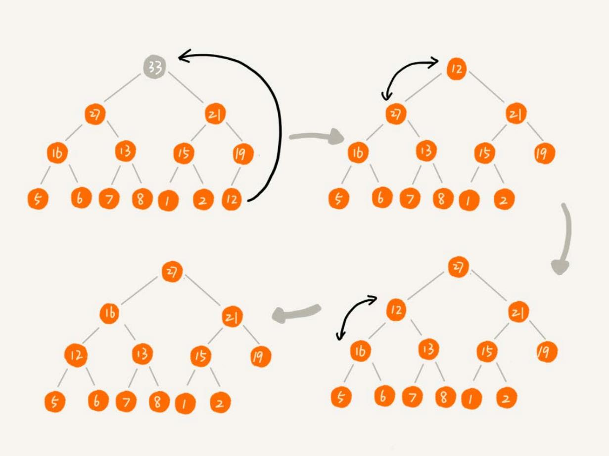
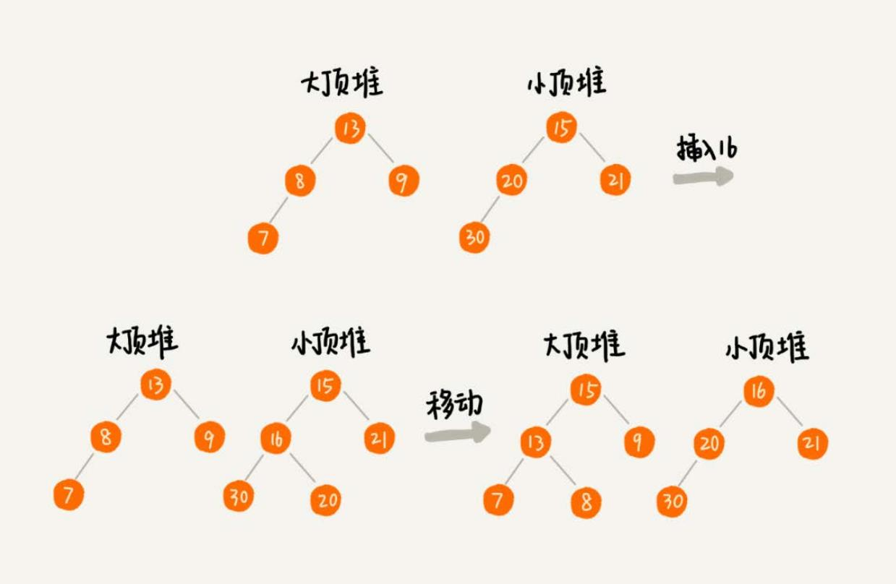

堆 #
堆是一种特殊的树。
- 堆必须是一个完全二叉树；
- 堆中每一个节点的值都必须大于等于（或小于等于）其子树中每个节点的值。换一种说法，堆中每个节点的值都大于等于（或者小于等于）其左右 子节点的值。
对于每个节点的值都大于等于子树中每个节点值的堆，叫作大顶堆。对于每个节点的值都小于等于子树中每个节点值的堆，叫作小顶堆。
将根节点最大的堆叫做最大堆或大根堆，根节点最小的堆叫做最小堆或小根堆。
堆最经典的应用就是堆排序了。
实现一个堆 #
完全二叉树比较适合用数组来存储，非常节省存储空间。
用数组存储堆的例子：

数组中下标为 i 的位置，下标为 2 * i 的位置存储的就是左子节点，下标为 2 * i + 1 的位置存储
的就是右子节点。反过来，下标为 i/2 的位置存储就是它的父节点。
插入 #
往堆中插入一个元素后，需要继续满足堆的两个特性。如果把新插入的元素放到堆的最后，如下图，已经不符合堆的特性。于是， 就需要进行调整，让其重新满足堆的特性，这个过程叫作堆化（heapify）。

堆化有两种，从下往上和从上往下。先看从下往上的堆化方法。
堆化非常简单，就是顺着节点所在的路径，向上或者向下，对比，然后交换。
让新插入的节点与父节点对比大小。如果不满足子节点小于等于父节点的大小关系，就互换两个节点。一直重复这个过程，直到父子节点之间满足刚说的那 种大小关系。
type Heap struct {
a []int // 数组，从下标 1 开始存储
n int // 堆可以存储的元素的最大个数
count int // 堆已经存储的元素的个数
}
// top-max heap -> heapify from down to up
func (h *Heap) insert(data int) {
if h.count >= h.n { // 堆满了
return
}
h.count ++
h.a[h.count] = data
// compare with parent node
i := h.count
parent := i / 2
// fmt.Println(i, parent)
for parent > 0 && h.a[parent] < h.a[i] {
swap(h.a, parent, i)
i = parent
parent = i / 2
}
}
func swap(a []int, i, j int) {
a[i], a[j] = a[j], a[i]
}
删除堆顶元素 #
堆顶元素存储的就是堆中数据的最大值或者最小值。
假设构造的是大顶堆，堆顶元素就是最大的元素。当删除堆顶元素之后，就需要把第二大的元素放到堆顶，那第二大元素肯定会出现在左右子节点中。 然后再迭代地删除第二大节点，以此类推，直到叶子节点被删除。

上面的方法有点问题，就是最后堆化出来的堆并不满足完全二叉树的特性。
把最后一个节点放到堆顶，然后利用同样的父子节点对比方法。对于不满足父子节点大小关系的，互换两个节点，并且重复进行这个过程，直到父子节点 之间满足大小关系为止。这就是从上往下的堆化方法。

一个包含 n 个节点的完全二叉树，树的高度不会超过 log2n。堆化的过程是顺着节点所在路径比较交换的，所以堆化的时间复杂度跟树的高度成正比，
也就是 O(logn)。插入数据和删除堆顶元素的主要逻辑就是堆化，所以，往堆中插入一个元素和删除堆顶元素的时间复杂度都是 O(logn)。
func (h *Heap) removeMax() {
if h.count == 0 { // 堆空了
return
}
// swap max and last
swap(h.a, 1, h.count)
// heapify from up to down
heapifyUpToDown(h.a, h.count)
}
func heapifyUpToDown(a []int, count int) {
for i := 1; i <= count/2; {
maxIndex := i
if a[i] < a[i * 2] {
maxIndex = i * 2
}
if i * 2 + 1 <= count && a[maxIndex] < a[i * 2 + 1] {
maxIndex = i * 2 + 1
}
if maxIndex == i {
break
}
swap(a, i, maxIndex)
i = maxIndex
}
}
堆排序 #
堆排序是一种原地的、时间复杂度为 O(nlogn) 的排序算法。
堆排序的过程大致分解成两个大的步骤，建堆和排序。
建堆 #
所谓“原地”就是，不借助另一个数组，就在原数组上操作。建堆的过程，有两种思路：
- 在堆中插入一个元素的思路。尽管数组中包含 n 个数据，但是可以假设，起初堆中只包含一个数据，就是下标为 1 的数据。然后，调用前面讲的插入 操作，将下标从 2 到 n 的数据依次插入到堆中。这样我们就将包含 n 个数据的数组，组织成了堆。
- 第一种建堆思路的处理过程是从前往后处理数组数据，并且每个数据插入堆中时，都是从下往上堆化。而第二种实现思路，是从后往前处理数组，并且 每个数据都是从上往下堆化。
// build a heap
func buildHeap(a []int, n int) {
// heapify from the last parent node
for i := n / 2; i >= 1; i-- { // 对下标从 n/2 开始到 1 的数据进行堆化，因为叶子节点堆化比较的是自己，所以叶子节点不需要堆化
heapifyUpToDown(a, i, n) // 从第一个非叶子节点 n/2 开始堆化
}
}
排序 #
建堆结束之后，数组中的数据已经是按照大顶堆的特性来组织的。数组中的第一个元素就是堆顶，也就是最大的元素。把它跟最后一个元素交换，那最大元素 就放到了下标为 n 的位置。
这个过程有点类似上面讲的“删除堆顶元素”的操作，当堆顶元素（堆顶是最大的）移除之后，把下标为 n 的元素放到堆顶，然后再通过堆化 的方法，将剩下的 n-1 个元素重新构建成堆。堆化完成之后，再取堆顶的元素，放到下标是 n-1 的位置，一直重复这个过程，直到最后堆中只剩下标 为 1 的一个元素，排序工作就完成了。
// sort by ascend, a index begin from 1, has n elements
func sort(a []int, n int) {
buildHeap(a, n)
k := n
for k >= 1 {
swap(a, 1, k)
heapifyUpToDown2(a, 1, k-1)
k--
}
}
快速排序和堆排序 #
实际开发中，为什么快速排序要比堆排序性能好？
- 堆排序数据访问的方式没有快速排序友好。
- 对于同样的数据，在排序过程中，堆排序算法的数据交换次数要多于快速排序。
堆的应用 #
优先级队列 #
优先级队列，首先它是一个队列。队列最大的特性就是先进先出。不过，在优先级队列中，数据的出队顺序不是先进先出，而是按照优先级来， 优先级最高的，最先出队。
用堆来实现优先级队列是最直接、最高效的。因为，堆和优先级队列非常相似。一个堆就可以看作一个优先级队列。往优先级队列中插入 一个元素，就相当于往堆中插入一个元素；从优先级队列中取出优先级最高的元素，就相当于取出堆顶元素。
优先级队列的使用场景：
合并有序小文件 #
假设有100个小文件，每个文件的大小是 100 MB，每个文件中存储的都是有序的字符串。希望将这些 100 个小文件合并成一个有序的大文件。 这里就会用到优先级队列。
整体思路有点像归并排序中的合并函数。从这 100 个文件中，各取第一个字符串，放入数组中，然后比较大小，把最小的那个字符串放入合 并后的大文件中，并从数组中删除。
假设，这个最小的字符串来自于 13.txt 这个小文件，就再从这个小文件取下一个字符串，并且放到数 组中，重新比较大小，并且选择最小的放入合并后的大文件，并且将它从数组中删除。依次类推，直到所有的文件中的数据都放入到大 文件为止。
这里用数组这种数据结构，来存储从小文件中取出来的字符串。每次从数组中取最小字符串，都需要循环遍历整个数组，显然， 这不是很高效。有没有更加高效方法呢？这里就可以用到优先级队列，也可以说是堆。将从小文件中取出来的字符串放入到小顶堆中， 那堆顶的元素，也就是优先级队列队首的元素，就是最小的字符串。将这个字符串放入到大文件中，并将其从堆中删除。然后再从 小文件中取出下一个字符串，放入到堆中。循环这个过程，就可以将 100 个小文件中的数据依次放入到大文件中。
高性能定时器 #
假设一个定时器，维护了很多定时任务，每个任务都设定了一个要触发执行的时间点。定时器每过一个很小的单位时间（比如 1 秒），就扫描 一遍任务，看是否有任务到达设定的执行时间。如果到达了，就拿出来执行。
但是，这样每过 1 秒就扫描一遍任务列表的做法比较低效，主要原因有两点：
- 任务的约定执行时间离当前时间可能还有很久，前面很多次扫描其实都是徒劳的；
- 每次都要扫描整个任务列表，如果任务列表很大的话，会比较耗时。
针对这样的问题，就可以用优先级队列来解决。按照任务设定的执行时间，将这些任务存储在优先级队列中，队列首部（也就是小顶堆的堆顶） 存储的是最先执行的任务。
这样，定时器就不需要每隔 1 秒就扫描一遍任务列表了。它拿队首任务的执行时间点，与当前时间点相减，得到一个时间间隔 T。这个 时间间隔 T 就是，从当前时间开始，需要等待多久，才会有第一个任务需要被执行。这样，定时器就可以设定在 T 秒之后，再来执行任 务。从当前时间点到（T-1）秒这段时间里，定时器都不需要做任何事情。
当 T 秒时间过去之后，定时器取优先级队列中队首的任务执行。然后再计算新的队首任务的执行时间点与当前时间点的差值，把这个值作为 定时器执行下一个任务需要等待的时间。这样，定时器既不用间隔 1 秒就轮询一次，也不用遍历整个任务列表，性能也就提高了。
求 Top K #
求 Top K 的问题可以抽象成两类：
- 针对静态数据集合，也就是说数据集合事先确定，不会再变。
- 针对动态数据集合，也就是说数据集合事先并不确定，有数据动态地加入到集合中。
针对静态数据，如何在一个包含 n 个数据的数组中，查找前 K 大数据呢？我们可以维护一个大小为 K 的小顶堆，顺序遍历数组，从 数组中取出取数据与堆顶元素比较。如果比堆顶元素大，我们就把堆顶元素删除，并且将这个元素插入到堆中；如果比堆顶元素小，则不 做处理，继续遍历数组。这样等数组中的数据都遍历完之后，堆中的数据就是前 K 大数据了。
遍历数组需要 O(n) 的时间复杂度，一次堆化操作需要 O(logK) 的时间复杂度，所以最坏情况下，n 个元素都入堆一次，所以时间
复杂度就是 O(nlogK)。
针对动态数据求得 Top K 就是实时 Top K。举一个例子。一个数据集合中有两个操作，一个是添加数据，另一个询问当前的前 K 大数据。
如果每次询问前 K 大数据，都基于当前的数据重新计算的话，那时间复杂度就是 O(nlogK)，n 表示当前的数据的大小。实际上，可以一
直都维护一个 K 大小的小顶堆，当有数据被添加到集合中时，就拿它与堆顶的元素对比。如果比堆顶元素大，就把堆顶元素删除，并且将这
个元素插入到堆中；如果比堆顶元素小，则不做处理。这样，无论任何时候需要查询当前的前 K 大数据，都可以里立刻返回给他。
求中位数 #
中位数，就是处在中间位置的那个数。如果数据的个数是奇数，把数据从小到大排列，那第 n/2+1 个数据就是中位数；如果数据的个
数是偶数的话，那处于中间位置的数据有两个，第 n/2 个和第 n/2+1 个数据，这个时候，可以随意取一个作为中位数，比如取两
个数中靠前的那个，就是第 n/2 个数据。
对于一组静态数据，中位数是固定的，我们可以先排序，第 n/2 个数据就是中位数。
但是，如果面对的是动态数据集合，中位数在不停地变动，如果再用先排序的方法，每次询问中位数的时候，都要先进行排序， 那效率就不高了。
借助堆这种数据结构，不用排序，就可以非常高效地实现求中位数操作。
需要维护两个堆，一个大顶堆，一个小顶堆。大顶堆中存储前半部分数据，小顶堆中存储后半部分数据，且小顶堆中的数据都大于大顶堆中的 数据。
也就是说，如果有 n 个数据，n 是偶数，从小到大排序，那前 n/2 个数据存储在大顶堆中，后 n/2 个数据存储在小顶堆中。这样，
大顶堆中的堆顶元素就是要找的中位数。
如果 n 是奇数，情况是类似的，大顶堆就存储 n/2 + 1 个数据，小顶堆中就存储 n/2 个数据。
数据是动态变化的，当新添加一个数据的时候，如何调整两个堆，让大顶堆中的堆顶元素继续是中位数？
如果新加入的数据小于等于大顶堆的堆顶元素，就将这个新数据插入到大顶堆；如果新加入的数据大于等于小顶堆的堆顶元素，就将这个 新数据插入到小顶堆。
这个时候就有可能出现，两个堆中的数据个数不符合前面约定的情况：如果 n 是偶数，两个堆中的数据个数都是 n/2；如果 n 是奇数，
大顶堆有 n/2 + 1 个数据，小顶堆有 n/2 个数据。这个时候，可以从一个堆中不停地将堆顶元素移动到另一个堆，通过这样的调整，
来让两个堆中的数据满足上面的约定。

于是，就可以利用两个堆，一个大顶堆、一个小顶堆，实现在动态数据集合中求中位数的操作。插入数据因为需要涉及堆化，所以时间
复杂度变成了 O(logn)，但是求中位数只需要返回大顶堆的堆顶元素就可以了，所以时间复杂度就是 O(1)。
如何快速求接口的 99% 响应时间 #
中位数的概念就是将数据从小到大排列，处于中间位置，就叫中位数，这个数据会大于等于前面 50% 的数据。99 百分位数的概念可以类 比中位数，如果将一组数据从小到大排列，这个 99 百分位数就是大于前面 99% 数据的那个数据。
维护两个堆，一个大顶堆，一个小顶堆。假设当前总数据的个数是 n，大顶堆中保存 n*99% 个数据，小顶堆中保存 n*1% 个数据。
大顶堆堆顶的数据就是要找的 99% 响应时间。
插入一个数据也类似中位数的操作。
通过这样的方法，每次插入数据，可能会涉及几个数据的堆化操作，所以时间复杂度是 O(logn)。每次求 99% 响应时间的时候，直接
返回大顶堆中的堆顶数据即可，时间复杂度是 O(1)。